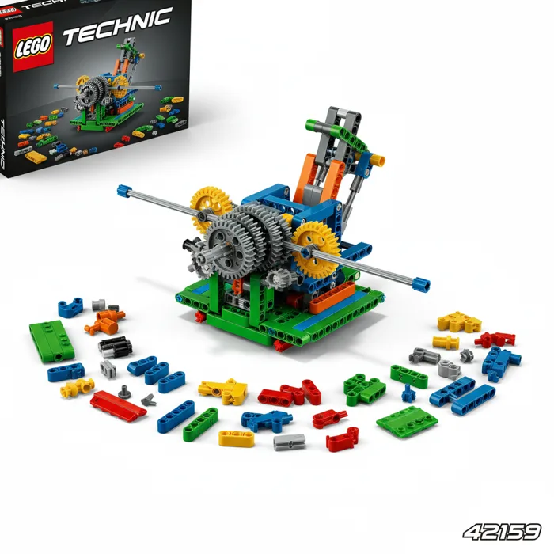

IMMAGINE ILLUSTRATIVA
IMMAGINE ILLUSTRATIVAESEMPIO EDITORIALE
JBL Go 4
Esempio editoriale: modello e caratteristiche da verificare prima della scelta.
Prezzo non rilevatoLink Amazon in attesa di verifica
Le casse portatili sono un regalo versatile per casa, viaggi e tempo libero. Confronta autonomia, dimensioni e resistenza all’acqua prima di scegliere.
Scorri le selezioni qui sotto: i modelli vengono prima dei consigli. Prezzi e disponibilità si verificano sul negozio.
IMMAGINE ILLUSTRATIVAEsempio editoriale: modello e caratteristiche da verificare prima della scelta.
IMMAGINE ILLUSTRATIVAEsempio editoriale: modello e caratteristiche da verificare prima della scelta.
Selezione editoriale: prezzi, link e disponibilità vengono mostrati solo quando verificati.
Per una scrivania, una camera o uno zaino scegli prima di tutto dimensioni, peso e praticità. Verifica se lo speaker può essere appoggiato stabilmente, agganciato a un passante e ricaricato con i cavi già disponibili. Un buon modello da viaggio non dovrebbe richiedere una configurazione complicata ogni volta che cambia telefono.
IMMAGINE ILLUSTRATIVAEsempio editoriale: modello e caratteristiche da verificare prima della scelta.
IMMAGINE ILLUSTRATIVAEsempio editoriale: modello e caratteristiche da verificare prima della scelta.
Selezione editoriale: prezzi, link e disponibilità vengono mostrati solo quando verificati.
In questa fascia il compromesso principale è tra dimensioni, volume e autonomia. Evita di giudicare uno speaker soltanto dalla potenza indicata nella scheda: leggi le condizioni in cui viene misurata la durata della batteria, controlla il tipo di ricarica e verifica che i comandi siano intuitivi anche per chi non ama la tecnologia.
IMMAGINE ILLUSTRATIVAEsempio editoriale: modello e caratteristiche da verificare prima della scelta.
IMMAGINE ILLUSTRATIVAEsempio editoriale: modello e caratteristiche da verificare prima della scelta.
Selezione editoriale: prezzi, link e disponibilità vengono mostrati solo quando verificati.
Per una festa o un uso all’aperto può servire più volume, ma contano anche stabilità del collegamento, autonomia a volume sostenuto e protezione dagli schizzi, quando dichiarata. Valuta il peso da trasportare, la facilità di condivisione e, se vuoi collegare più diffusori, la compatibilità tra i modelli della stessa famiglia.
Uno speaker Bluetooth può essere una buona idea per chi ascolta musica in cucina, in viaggio o durante una festa, ma le esigenze cambiano molto da una situazione all’altra. Un modello compatto punta sulla facilità di trasporto; uno più grande può offrire una maggiore presenza sonora, a costo di peso e ingombro. Prima di confrontare i prodotti, considera dove verrà usato più spesso, quante persone ascolteranno insieme e quanto conta l’autonomia.
Non fermarti ai watt dichiarati: la qualità percepita dipende anche da progettazione, posizionamento e ambiente. Controlla la versione Bluetooth, la facilità di associazione, la presenza di USB-C, i controlli fisici e le indicazioni effettive del produttore sulla resistenza all’acqua. Se è un regalo, un dispositivo semplice da usare e trasportare può essere più gradito di uno ricco di funzioni poco utilizzate.
Consulta anche come selezioniamo le idee regalo e la nostra raccolta di guide.
Parti da dove verrà utilizzato: scrivania, cucina, viaggio o giardino. In seguito confronta dimensioni, autonomia dichiarata, facilità dei comandi e protezione da acqua e polvere. Il modello più potente non è sempre quello più adatto.
Il numero di watt da solo non racconta tutta la qualità sonora: contano anche dimensioni, efficienza dei driver e distorsione ai volumi elevati. In un regalo è più utile abbinare la categoria di speaker all’uso previsto che inseguire il dato più alto.
Controlla la certificazione IP dichiarata dal modello. Le sigle differenziano la protezione contro polvere e acqua e non rendono automaticamente sicuro qualsiasi utilizzo. Verifica sempre le indicazioni del produttore.
L’autonomia dichiarata dipende dalle condizioni di prova. Volume elevato, bassi accentuati e luci possono ridurla. Se il destinatario ascolta musica molte ore lontano da una presa, prediligi modelli che dichiarano una buona riserva di autonomia.
Uno speaker Bluetooth portatile è pensato per muoversi anche senza Wi-Fi. Uno smart speaker ha spesso senso soprattutto in casa, per comandi vocali e servizi collegati: prima di regalarlo considera privacy e compatibilità con l’ecosistema domestico.
Questi quesiti riflettono temi ricorrenti nelle guide di settore e nella ricerca informativa. Non sono ordinati per volume: la priorità delle keyword va validata con Search Console e strumenti SEO.

Un microfono karaoke è perfetto per feste e serate in famiglia. Prima di acquistarlo valuta se ha un altoparlante integrato e come si collega a telefono o TV.

Trousse, palette e piccoli kit sono regali apprezzati da chi ama il make-up. Scegli colori versatili e controlla ingredienti e preferenze personali.

Costruzioni, mattoncini e percorsi creativi aiutano a trasformare un regalo in un’attività. Valuta età consigliata, livello di difficoltà e spazio disponibile.